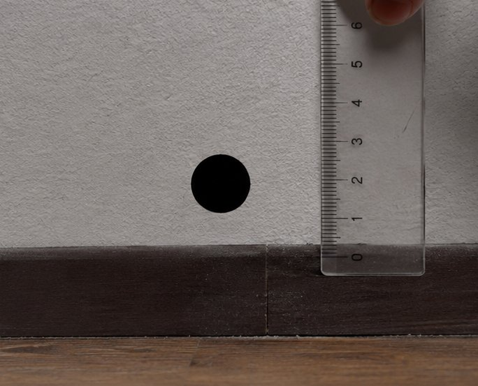
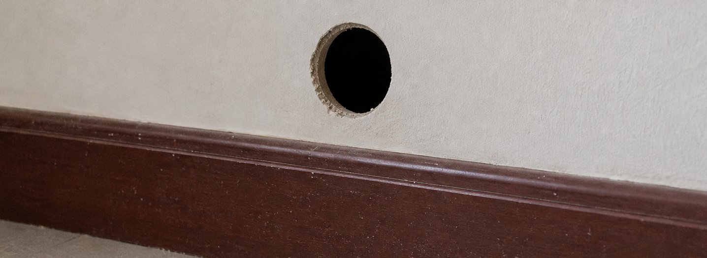
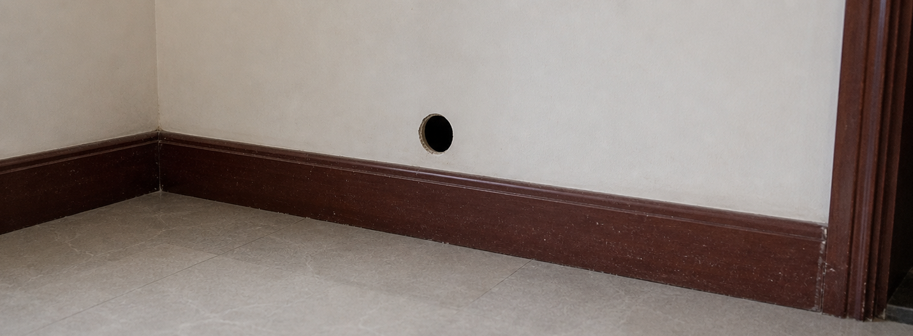

老哥老姐们求救！墙上突然出现了个3cm的黑洞。

我租的这个老公寓，凯旋路那边的，房龄快二十五年了。今晚洗完澡光脚走到客厅，被踢脚线下面什么东西"硌"了一下，但低头一看根本没东西，是墙上多了一个洞。
直径估摸着3厘米，圆得不像话。我拿圆规比了一下，边缘误差不超过半毫米。问题是这墙就普通水泥墙加石膏腻子，怎么会自己长出这么齐整的洞？


最诡异的是，我用手机闪光灯照里面，啥都看不见。不是漆黑，是那种……光线进去就没了。
请问是白蚁吗？还是楼上漏水把墙泡空了？要不要立刻报修？在线等，挺急的。